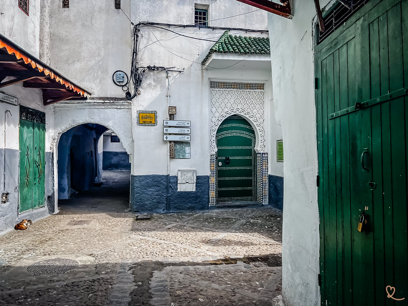
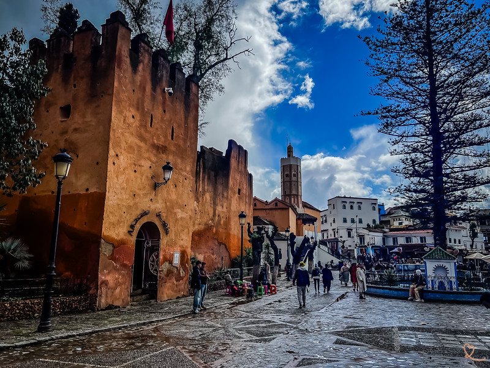
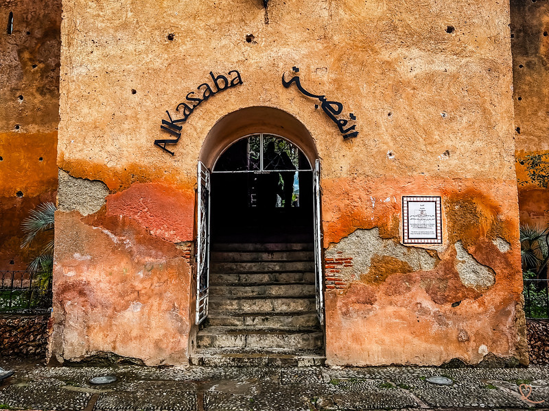
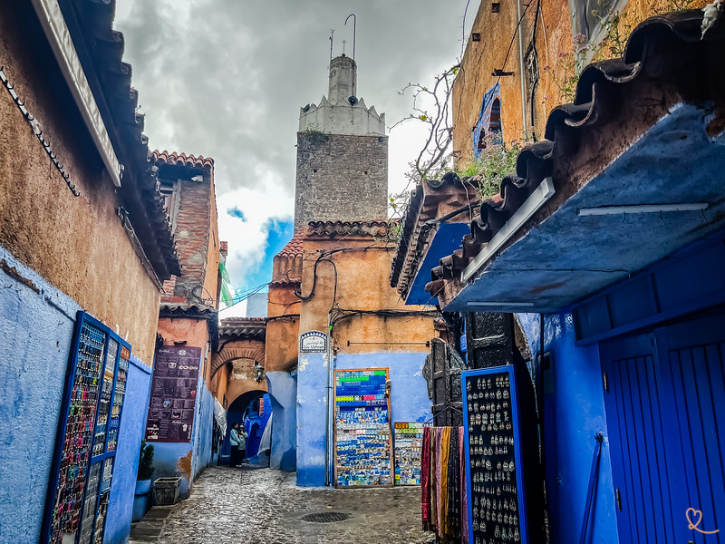
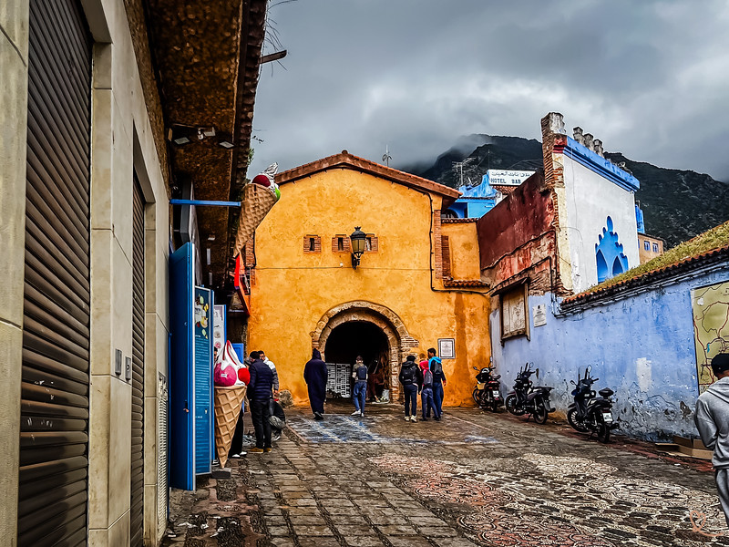
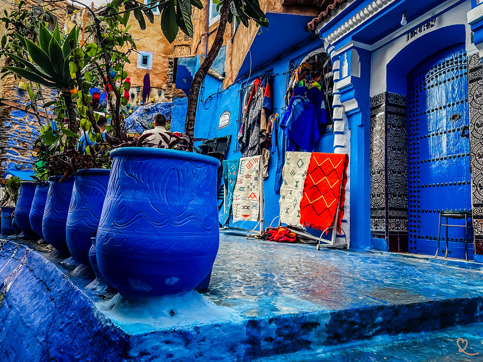
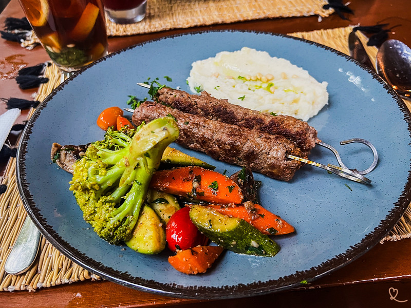
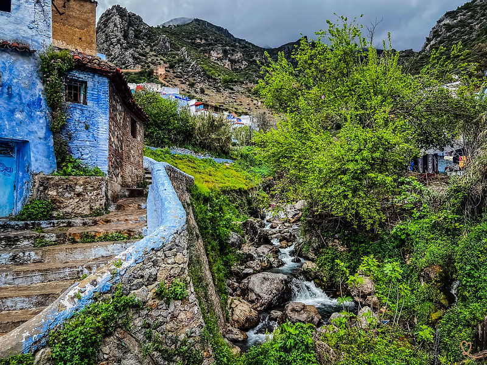
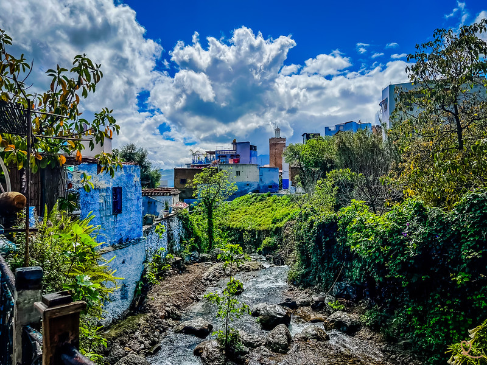
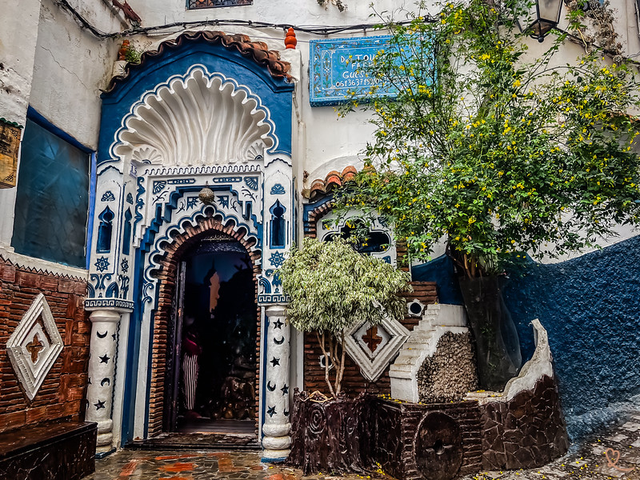

10 incontournables à visiter avec photos et conseils pratiques
Connaissez-vous Chefchaouen, perle du Rif marocain ? Cette petite ville bleue nous a enchantés avec ses ruelles colorées, sa médina vallonnée et son atmosphère apaisante. Retrouvez toutes nos idées pour savoir que faire à Chefchaouen, ainsi que nos photos et des conseils utiles.
Sommaire
Absolument ! Chefchaouen est l'une des plus belles villes du Maroc. Cette petite ville bleue du Rif nous a séduits par son charme villageois et ses ruelles colorées. À chaque coin de rue, des fresques artistiques, des portes ornées et des cascades avec les montagnes en arrière-plan composent un tableau digne d'une carte postale.
Même sans voiture, vous pouvez la découvrir en excursion organisée depuis Tétouan, Fès ou Tanger. Comptez minimum 1 nuit sur place pour en profiter pleinement.

Arpenter la médina, c'est entrer dans un univers bleu et blanc que vous ne verrez nulle part ailleurs. Chaque ruelle, chaque porte colorée et chaque escalier fleuri se transforment en décor de carte postale. Peindre les murs en bleu permettait d'éloigner les insectes et de préserver les habitations de la chaleur.

La place centrale de Chefchaouen est le point de rendez-vous incontournable. Entourée de cafés, de restaurants et d'arbres centenaires, elle est bordée par la Kasbah d'un côté et la Grande Mosquée de l'autre. C'est ici que la vie locale bat son plein, surtout en soirée.

Construite au XVe siècle par Moulay Ali ben Rachid, la Kasbah est une forteresse ocre qui contraste joliment avec les murs bleus environnants. Elle abrite un jardin andalou paisible et un petit musée présentant l'histoire de la région.

La Grande Mosquée de Chefchaouen se distingue par son minaret octogonal à base carrée, une architecture rare au Maroc d'influence andalouse. Construite au XVIe siècle par des réfugiés andalous, elle est visible depuis la place centrale et domine l'ancienne médina.

Le long des murailles de la médina, vous découvrirez l'une des portes les mieux conservées de la ville. Construite sous le règne du sultan Moulay Ali Ben Rachid au XVIe siècle, elle témoigne de l'architecture défensive de l'époque. En faisant le tour complet des remparts, vous en compterez 7.

Les souks de Chefchaouen regorgent de produits locaux : couvertures en laine berbère, djellabas, poteries, huile d'argan et épices. Nous avons été charmés par l'authenticité de l'artisanat local, notamment les tapis rifains et les cosmétiques naturels.

La gastronomie de Chefchaouen est influencée par les traditions berbères et andalouses. Au menu : tagines, couscous, kefta, pastilla et fromages frais de chèvre. La spécialité est la pastilla, viande hachée ou poulet avec amandes enveloppées dans de la pâte feuilletée.

Remontez au nord-est de la ville pour observer cette source naturelle qui coule à la sortie est de la médina. C'est assez surprenant de voir une cascade en pleine ville. Un endroit ombragé qui apporte un peu de fraîcheur et de verdure à votre balade.

En contrebas de la source Ras El Ma, de petites cascades traversent la ville. Plus loin, les cascades d'Akchour offrent un trek magnifique dans la forêt du parc naturel de Talassemtane. Lieu pittoresque animé par des moulins et des lavoirs traditionnels.

Dormir à Chefchaouen vous permettra de profiter du charme bleu après le départ des touristes qui visitent à la journée. Les riads et maisons d'hôtes, souvent décorés de zelliges et de patios fleuris, proposent une expérience intime et authentique.
| # | Lieu | Type | Horaires | Entrée |
|---|---|---|---|---|
| 1 | Ruelles bleues de la médina | Patrimoine | Toute la journée | Gratuit |
| 2 | Place Outa El-Hammam | Place publique | Toute la journée | Gratuit |
| 3 | Kasbah + Musée | Musée | 9h – 17h30 | 60 MAD |
| 4 | Mosquée andalouse | Monument | Extérieur libre | Gratuit |
| 5 | Porte Bab Al Ain | Monument | Toute la journée | Gratuit |
| 6 | Marchés et Souks | Marché | 8h – 19h | Gratuit |
| 7 | Restaurants de la médina | Gastronomie | 12h – 22h | Variable |
| 8 | Source Ras El Ma | Nature | Toute la journée | Gratuit |
| 9 | Cascades d'Akchour | Nature / Trek | Toute la journée | Gratuit |
| 10 | Nuit dans la médina | Hébergement | — | À partir de 250 MAD |
| 10 lieux incontournables — Source : Guide Chefchaouen | ||||
Prévoyez une journée complète pour découvrir la médina et ses environs, ou deux jours avec une nuit sur place pour profiter pleinement de l'atmosphère. Évitez la haute saison (juin–septembre) pour moins d'affluence. Le printemps (mars–mai) et l'automne (sept–nov) offrent un climat idéal.
La médina est vallonnée avec des rues étroites en montée et de nombreux escaliers. Le sol pavé devient glissant quand il pleut. Si vous visitez avec des enfants en bas âge, privilégiez le porte-bébé plutôt que la poussette.